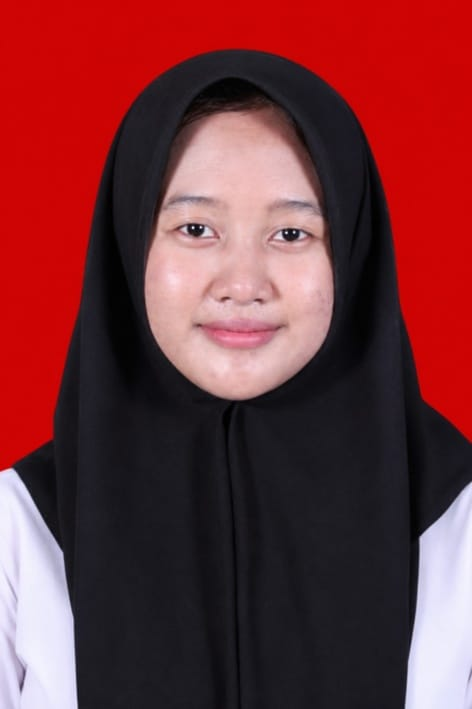

Halo, saya
Mutiara Tunjung Laras.
Mahasiswa Program Studi Informatika, Fakultas Sains dan Teknologi. Memiliki ketertarikan pada teknologi, pengolahan data, serta pengembangan aplikasi sederhana.

Tentang Saya
Mengenal latar belakang dan ketertarikan saya.
Saya merupakan mahasiswa Program Studi Informatika di Fakultas Sains dan Teknologi. Saya tertarik mempelajari pemanfaatan teknologi untuk membantu pekerjaan menjadi lebih terstruktur dan mudah digunakan. Saya terus mengembangkan kemampuan melalui tugas perkuliahan, pembelajaran mandiri, dan proyek yang saya kerjakan.
Riwayat Pendidikan
Perjalanan pendidikan yang telah dan sedang saya tempuh.
Universitas Muhammadiyah Sidoarjo
Program Studi Informatika
Fakultas Sains dan Teknologi
MAN 1 Pasuruan
Pendidikan Menengah Atas
SMP
Nama sekolah dapat ditambahkan di sini.
Sertifikat
Dokumentasi program dan kompetensi yang telah saya ikuti.
Program Terapan Bidang Teknologi Informasi dan Komunikasi (PRODISTIK)
Program pendidikan dan pelatihan teknologi informasi dan komunikasi yang diselenggarakan melalui kerja sama MAN 1 Pasuruan dengan Institut Teknologi Sepuluh Nopember (ITS).
IPK: 3,84
Beban Studi: 25 SKS
Nama Sertifikat
Tambahkan nama program, penyelenggara, dan keterangan sertifikat yang benar-benar dimiliki.
KompetensiKemampuan
Beberapa bidang yang sedang saya pelajari dan kembangkan.
Microsoft Excel
Menggunakan tabel, fungsi, dan rumus untuk membantu proses pengolahan data.
Excel VBA
Menggunakan macro dan tombol untuk menjalankan fungsi tertentu dalam aplikasi Excel.
Pengolahan Data
Menyusun, mengelompokkan, dan menyajikan data dalam bentuk rekapitulasi.
Proyek Pilihan
Dokumentasi proyek yang pernah saya kembangkan.
EmoJournal
Aplikasi evaluasi dan refleksi emosi mingguan siswa berbasis Microsoft Excel. Proyek ini dikembangkan untuk membantu pencatatan dan rekapitulasi emosi siswa secara lebih terstruktur menggunakan tabel, rumus, dan fitur VBA.
Tujuan: Menyediakan media pencatatan emosi mingguan yang praktis dan mudah digunakan.
Lihat File Proyek ↗ GitHub Repository ↗Mari Terhubung
Terbuka untuk belajar, berkolaborasi, dan mengembangkan pengalaman di bidang teknologi.
Kunjungi GitHub ↗